Astrub

- Les principes d'Archie m'aident
- On marche sur des oeufs (Dofawa)
- Conseil de classe
- Quête de classe
- Ça sent le gaz
- On recherche Fouduglen L’écureuil (Cité d'Astrub)
- On recherche Frakacia Leukocytine (Forêt d'Astrub)
Captain Amakna
- Protéger et sévir (Accès Base des Justiciers)
- L’école fantastique
- Compagnonnage

Mais où sont les Dofus ?

- Le réveil de Pandala (Accès Pandala + Mob Sidoas)
- Un pendule pour guider ses pas (Accès au Dédale du Dark Vlad)
- On recherche Gadoo (Marécages sans fond)
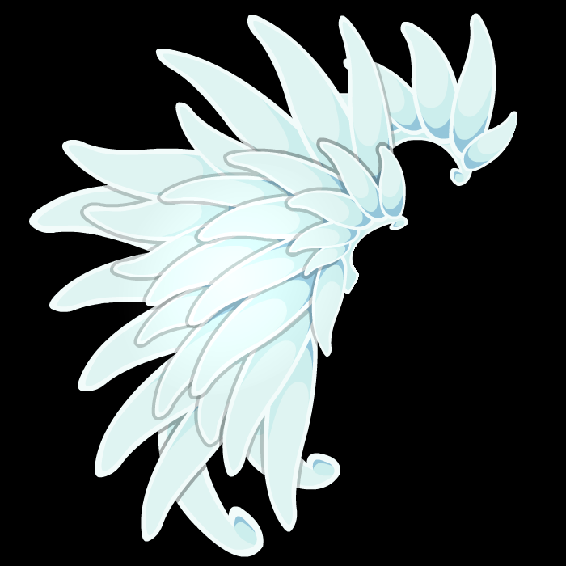

Bonta / Brâkmar : Alignement 1-10
- Alignement 1-10
- Entraînement avec Tarche || Cliquetis Fou
- La tenancière Dame Cloude || Le professionnel
- Du pain pour les braves || Un coup de fouet
- Ned le dentiste || Le dentiste dément (Mob Chafer)
- Entraînement avec Torche || La revanche de Mak
- Cartes spéciales d'Amayiro || La noirceur des armes blanches
- A vol d'oiseau || La mise à mort
- Pas de fainéants dans les rangs ! || Les gardes d'honneur ... à punir
- Première visite à Brâkmar || Un oubli regrettable
- Un sanglier un peu trop agressif || Tête de gland
Amakna
- On recherche Sam Sagaz (Prairie d'Astrub)
- On recherche Maître Boulet (Clairière de Brouce Boulgoure)
- On recherche Roub’Ignolles (Cimetière d’Amakna)
- On recherche les Gumans (Champs d’Amakna)
- Formation des première années
Bonta / Brâkmar : Alignement 11-19
- Alignement 13-18
- Pot l'agent double || Agent double et demi
- De la poudre aux yeux de Brâkmar || Livreur de mauvaise nouvelle
- Une brèche à Bonta || Une collection digne de Xilébo (|| Mob Chafer)
- Intrusion chez les wabbits (Accès Ile des Wabbits)
- Dégouts temps || D'égout pillé (Mob Rat)
- L'élite squelettique || Le tabis mangeur de blops (Mob Chafer ||)
- La foire du Trool suspectée || Alchimie malfaisante
- On recherche Ogivol Scalarcin (Bordure de Brâkmar)
- Formation des deuxièmes années | Stage de combat improvisé


 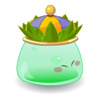
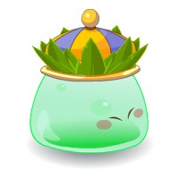

Ile de Moon : Plage de la Tortue et Forêt des Masques (Dokoko)
- Partir un jour sans retour (Accès Ile de Moon)
Bonta / Brâkmar : Ordre I et Alignement 19-22
- Alignement 20
- Ordre 1
- Alignement 21
- Craqueleur Légendaire :
- Alignement 22
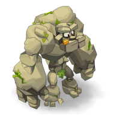


Ile d’Otomaï : Arche d’Otomaï
- Le nouveau monde (Accès Ile d'Otomaï)
- L'île des naufragés (Accès Ile d'Otomaï)
- Le Gardien du Pont de la Mort (Accès Tourbière sans fond)
- On recherche Armada l’Invincible (Arche d’Otomaï)
Montagne des Koalaks : Territoire des Dragodindes Sauvages, Lacs Enchantés et Forêt de Kaliptus
- Alignement 23-24
- Des capes Bontariennes || Par la force ou par la finesse ?
- Corvée de patate || Le dur travail d'éplucheur de patates (Ressource Dragodinde)
- On recherche Dragodindo (Territoire des Dragodindes Sauvages)
- Alignement 25-26
- On recherche Musha l’Oni (Baie de Cania)
- On recherche Rok Gnorok (Lacs Enchantés)
- On recherche Aermyne ‘Braco’ Scalptaras (Forêt de Kaliptus)
- Formation des quatrièmes années
Plaines de Cania : Caniablanca
- On recherche Bouss Baybe (Plaine des Porkass)
- On recherche Marzwel le Gobelin (Massif de Cania)
- Alignement 27
- Amayiro à l'ombre du Champo || Chasse à l'espion (Mob Ruffians de Cania ||)
Landes de Sidimotes : Cimetière des Torturés et Désolation de Sidimotes
- Alignement 28
- Le décès de Rimaraf || Un petit oubli (|| Mob Sidimonstres)
- On recherche Qil Bil (Cimetière des torturés)
- Alignement 30-32
- Dike Tarak, la menace || Le défi du maître guerrier
- Des combats pas très légaux || Joie de courte durée
- Mission de reconnaissance au cimetière || Au combat !
- On recherche Brumen Tinctorias (Désolation de Sidimotes)
- Formation des troisièmes années | Apprentissage en tirage d’oreilles

Saharach : Dunes des ossements
- On recherche Tournade (Dunes des ossements)

Ile des Wabbits 2 (Dofus Cawotte)
- On recherche Nono le Wobot (Ilot de la Couronne)
Ile de Moon : Chemin du Crâne (Dokoko)
- On recherche Degolas (Chemin du Crâne)
Landes de Sidimotes : Route des Roulottes
- On recherche Simbadas (Route des Roulottes)

Forêt des Abraknydes (Dofus Sylvestre)
- On recherche Tyranne la terrible (Forêt Sombre)


Odyssée en trois dimensions (Dofus des Veilleurs)

- On recherche Maxi-Malle (Creuset des Fortunés)
- Formation des cinquièmes années
Ile de Kartonpath

Bonta / Brâkmar : Alignement 34-39
- Alignement 35-39

Ile de Moon : Jungle Interdite (Dokoko)
- On recherche Trukipik (Jungle Interdite)
Montagne des Koalaks : Canyon sauvage


Vert émeraude 2 (Dofus Emeraude)
- On recherche Carlita de l’Aguerfelde (Hauts des Hurlements)

Bonta / Brâkmar : Ordre II et Alignement 41
- Ordre 2
- Apprentissage : Apprenti Eclairé || Apprentissage : Apprenti Sombre (Esprit + Mob Jungle Interdite)
- Apprentissage : Espion Silencieux || Apprentissage : Espion Sombre (Oeil + || Mob Porcos)
- On recherche le Prince Marchand (Territoire des Porcos)


Plaines de Cania : Pénates du Corbac et Bois de Litneg
- On recherche Padgref Demoël (Bois de Litneg)
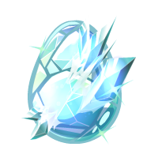
Ile de Frigost : La Bourgade et Champs de Glace (Dofus des Glaces)
- La terre banquise (Accès à Frigost)
- La maire de glace
- Bienvenue à Frigost | Full Contact
- Les monologues du vaccin (Vaccin contre le rhube de 7 jours + Mob Boufmouth)
- On recherche Bouflouth (Champs de Glace)

Ile du Minotoror
- On recherche la Vashkiwi (Ile du Minotoror)
Bonta / Brâkmar : Alignement 42-54
- Alignement 42-54
- Les Ecas ne flippent pas || X comme Xephirès (Mob Dragoeufs Protecteurs ||)
- Plaine de chats || Opération commando
- A l'endroit, à l'envers || Rencontre du premier type
- Dans la gueule du chacha || Joyau ... ze fête (|| Mob Plaines Herbeuses)
- Alimentaire mon cher || Le cristal de Kain Dharyn
- Bouc à misère || Cambriolage
- Flagrant délire || Livraison rapide (|| Ressource Wabbits Mutants)
- Quand y'en a marre de Brâkmar || Le moment de vérité
- La capture || Le puits sans fond (|| Ame Bandit + Koalaks)
- Le port salue || Le carnage des plaines
- L'équipe ment || Dans la peau de Sphincter Cell
- Une partie de cache-cache || Le forgeron aux deux mains gauches
- Pour vivre heureux || Mon nom est poison (Mob Truche || Mob Zoth)
Plaines de Cania : Cirque de Cania (Dotruche)
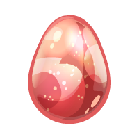
- Haute Truche :
- Alignement 55
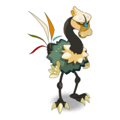
- On recherche Fojumo (Cirque de Cania)
Ile d’Otomaï : Plaines herbeuses, Tourbières sans fond et Tourbière nauséabonde
- On recherche Gobrechaun (Plaines herbeuses)
- On recherche Nenufor Tilotus (Tourbière sans fond)
- Le Chevalier Noir et Rose (Accès Tourbière nauséabonde)
- On recherche Ali Grothor (Tourbière nauséabonde)
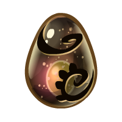
Xélorium : Chemins d’hier (Dofus Nébuleux)
- On recherche Morblok (Chemins d’hier)
Srambad : Ruelles des Eaux-Suaires (Dofus Nébuleux)
- On recherche Pantéroz (Ruelles des Eaux-Suaires)
Saharach : Territoire Cacterre
- On recherche le Roi Camole (Territoire Cacterre)
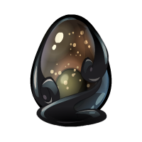
Ile de Pandala : Terrdala et Akwadala (Domakuro)
- Tanukouï San :
- Alignement 55
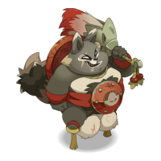
- On recherche Jérart Dupaindur (Terrdala)
Bonta / Brâkmar : Ordre III et Alignement 56-60
- Alignement 56-60
- La panoplie du milicien || Supermilicien (|| Ame Truche)
- Ambition aigüe || Le forgeron (Ressource Jungle Obscure || Truche)
- Trâknar || Paranoïa aigüe (|| Ressource Truche)
- La Grafioze || A la manière des Brâkmariens
- Attaque à retardement || Le trésor de La Descemer
- Ordre 3


Ile de Frigost : Forêt des pins perdus, Lac Gelé et Berceau d'Alma (Dofus des Glaces)
- On recherche Katigrou (Forêt des pins perdus)
- On recherche Monsieur Pinguin (Lac gelé)
- Formation des sixièmes années | Licence en distribution de pains
- Ben le Ripate :
- Fais dodo, t’auras du gâteau (Accès Larmes d'Ouronigride)
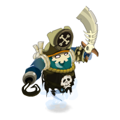
- On recherche Fantômayte (Berceau d’Alma)

Ile de Pandala : Feudala et Aerdala (Domakuro)
- On recherche Zatoïshwan (Feudala)

Ile d’Otomaï : Jungle Obscure
- On recherche Amy l’Empoisonneuse (Jungle Obscure)
Bonta / Brâkmar : Alignement 61-69
- Alignement 61-64
- Une rumeur intéressante || Une rumeur alléchante (Ressource Phorreurs)
- Investigation à Moon || Enquête à Moon
- Manière douce || Manière forte
- Histoires de tortues || Retour aux origines
- Sphincter Cell :
- Alignement 65
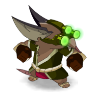
- Alignement 66-69
Ile d’Otomaï : Village de la Canopée, Tronc et Feuillage de l’arbre Hakam
- On recherche Darma (Village de la Canopée)
- On recherche Glandaf l’Aigri (Tronc de l’arbre Hakam)
Ile de Frigost : Larmes d’Ouronigride (Dofus des Glaces)
- On recherche Vengeuse Masquée (Larmes d’Ouronigride)

Enutrosor : Carrière Aurifère (Dofus Nébuleux)
- On recherche Aigripoil (Carrière Aurifère)
- Formation des septièmes années
Plaines de Cania : Landes de Cania et Dents de Pierre (Krosmoglob)

- On recherche Mogligli (Landes de Cania)
- On recherche Anatak Diskedor (Dents de Pierre)

Ile de Frigost : Crevasse Perge et Caverne des Givrefoux (Dofus des Glaces)
- On recherche le Yech’Ti (Crevasse Perge)
- Les indésirables
- On recherche Fuji Givrefoux (Cavernes des Givrefoux)
- Formation des huitièmes années | Maîtrise en flanquage de rouste

Xélorium : Jour présent (Dofus Nébuleux)
- On recherche Hin (Jour présent)
Bonta / Brâkmar : Alignement 71-80
- Alignement 71-80
- Un coupable idéal || L'épée maudite
- Un peu de juge hot || Allez, ce fer (|| Ressource Givrefoux + Hordémons)
- De drôles de témoins || Poignée d'amour (|| Ressource Givrefoux)
- Sram d'Egoutant || Le Marteau des Chus
- Si j'avais un marteau || L'épée, ça sent mauvais (|| Mob Hordémons)
- Esprit, es tu là ? || Plus, plus de puissance ! (Ressource Givrefoux ||)
- Vol du Temps || Des recherches sur la corne (Ame Hordémons ||)
- La mémoire en lambeaux || Maître chanteur (|| Ressource Hordémons + Givrefoux)
- Pense-bête || Comploteur malgré lui (|| Mob Fungus)
- L'Eclat de l'Aube || Le roi Estitch (Ressource Forêt Pétrifiée)
Saharach : Gorge des Vents Hurlants
- On recherche Ka’Youloud (Gorge des Vents Hurlants)
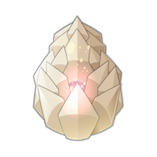
Ile de Grobe (Dorigami)
- On recherche Crasper (Mont des Tombeaux)
Landes de Sidimotes : Gisgoul, Domaine et Caverne des Fungus
- On recherche le Shushu Debruk’Sayl (Gisgoul)
- Ougah :
- Ordre 4
- Apprentissage : Champion Merveilleux || Apprentissage : Champions du Chaos (Coeur + Mob Tanuki || Plaines Herbeuses)
- Apprentissage : Maître des Parchemins || Apprentissage : Maître des Sévices (Esprit)
- Apprentissage : Assassin Suprême || Apprentissage : Psychopathe (Oeil + || Mob Jungle Obscure)
- Ordre 4
- On recherche Carter le Pillard (Caverne des Fungus)

Ile de Frigost : Village Enseveli et Forêt Pétrifiée (Dofus des Glaces)
- Alignement 81-84
- Ingérence en Amakna || Le trou d'Uk
- Petites faveurs entre amis || Gaspiller l'énergie ensemble (Mob Forêt Pétrifiée || Mob Fungus)
- Les gardiens de la galerie || Gemme les joyaux
- Le plateau de Leng || L'arakne de Leng
- On recherche Dremoan (Forêt Pétrifiée)

Srambad : Catacombes (Dofus Nébuleux)
- On recherche la Mouchâme (Catacombes)
Ile de Frigost : Crocs de verre (Dofus des Glaces)
- On recherche Flasho (Crocs de verre)


Bonta / Brâkmar : Alignement 86-89
- Alignement 86-89
- L'ascension de Qu'Tan || L'essor de Qu'Tan (Donjon Qu’Tan)
- Il ne faut pas se fier aux apparences || L'habit ne fait pas le moine
- On se calme || Les clefs du malheur
- Tout est bien qui finit mal || Chaud devant ! (Ressource Crocs de verre + Nécrotiques)
Ile de Frigost : Mont Torrideau et Ruche des Gloursons (Dofus des Glaces)
- Glourséleste :
- Le pic qui glace (Accès Château de Harebourg)
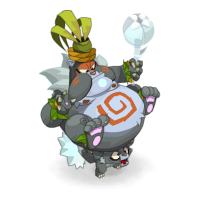
- On recherche Viti Glourson (Ruche des Gloursons)
- On recherche le Guerrier du K.O. (Mont Torrideau)
Ile de Frigost : Château de Harebourg
- Les marcheurs blancs
- On recherche Glourdorak (Jardins d’Hiver)
- On recherche Mekamouth (Remparts à vent)
- On recherche Psikopompe (Tannerie Ecarlate)
- On recherche le Chevalier de Glace (Bastion des froides légions)
- Nileza + Sylargh + Klime + Missiz Frizz :
- Il faut mettre un terme aux maîtres (Accès Tour de la Clepsydre)
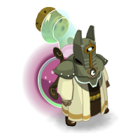
- On recherche Culbutoeuf (Tour de la Clepsydre)


Ile de Sakaï
- Grolloum :
- L’armée des ombres 1 (Ressource Obscuranti)
- Alignement 90
- Ca fait froid dans le dos || La vengeance est un plat qui se mange froid (Ame Obscuranti || Sakaï)
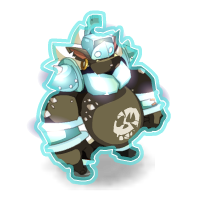
- On recherche le Docteur Eggob (Forêt enneigée)
- Ennemis d’état | Formation des neuvièmes années
Dimension Obscure
- Ombre : 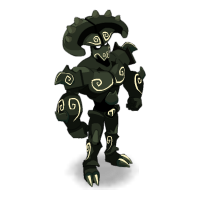
- On recherche le Sans Visage (Dimension Obscure)
Nimotopia
- À plus dans l'muldobus (Accès Nimotopia)
- On recherche Predagob (Nimotopia)
Bonta / Brâkmar : Alignement 91-100
- Alignement 91-96
- Cambriolage à durée déterminée || Mélodie en sous-sol
- C'est toujours dur le matin || Un monde en pets
- Je panse donc j'essuie || Mieux vaut guérir que mourir (Combat technique + Ressource Krobe)
- L'aube des morts-vivants || Le crépuscule des morts-vivants
- Un chemin tout tracé || Le faux cul
- Enigma || Cryptomane
- Alignement 98
- Alignement 100
- L'exorciste || La danse macabre (Mob Cour Sombre + Erazal)

Base Abyssale (Dofus Abyssal)
- Relevez les niveaux (Accès ascenseur de l'Aquadôme) | A bas Kralab Rah (Accès ascenseur des Courants)
- KO pour Bosko Tho (Accès ascenseur des Abîmes)
- Merkator :
- On recherche le Grand Kongoku (Salles des Embruns)
- On recherche l’Hyperscampe (Salles des Abîmes)
- On recherche le Fantôme Braïdeur (Caserne du Jour sans Fin)

Dimensions
- On recherche Voldelor (Retraite des Eternels)
- Formation des dixièmes années | Doctorat en bottage de fesses
- On recherche Gein (Hauts Ténébreux)
- On recherche Sicogne (Lendemains incertains)
- On recherche Atcham (Temple de Kérubim)
Saharach : Pyramide Maudite
- On recherche le Kheprikorne (Pyramide Maudite)
Profondeurs de Sufokia : Trithon
- La pêche aux infos
- Rançon nage
- Stratégie en Trithon Réel
- Sur fond de crise (Accès Faille des Trithons)
- Risquer un oeil
- La gueule de l’enfer (Accès Tréfonds des Trithons)
- On recherche Buldalazred (Tréfonds des Trithons)

Profondeurs de Sufokia : Ruines sous-marines
- Il y a de l’électricité dans l’eau
- Topo le petit robot (Accès Ancienne Sufokia + Mob Ruines sous marines)
- Son nom est personne
- La clef de l’énigme (Accès Vestiges engloutis, Mob Ruines sous marines)
- On recherche le Homard Medali (Vestiges engloutis)

Profondeurs de Sufokia : R’lyugluglu
- Celle qui glougloutait dans les ténèbres (Accès Fosse de R'lyugluglu)
- L'affaire Pollie Perkine
- Trop Pollie pour être honnête
- Quand les astres seront propices (Accès Abîme de R’lyugluglu)
- On recherche Takomako (Abîme de R’lyugluglu)